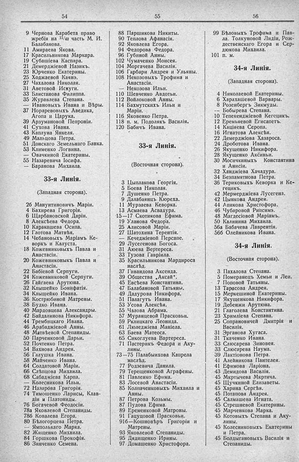

Лист источника 524
Скан

Распознанный текст
54
9 Чернова Карабета право
жребія на 11/42 часть М. И.
Балабанова.
11 Амираева Якова.
17 Красильникова Маркара.
19 Субашіева Каспара.
21 Демерджіевой Назикъ.
23 Юрченко Екатерины.
25 Ходжаевой Каянэ.
27 Чахалова Николая.
31 Аветовой Искуги.
33 Блистанова Филиппа.
35 Журавлева Степана.
— Ивановыхъ Ивана и Вѣры.
37 Нораревовыхъ Аведика,
Агопа и Царука.
39 Арзумановой Пепроніи.
41 Сухова Ивана.
43 Каплуна Янкеля.
49 Мальцова Петра.
51 Донскаго Земельнаго Банка.
53 Клименко Логвина.
— Овачкиной Екатерины.
55 Назаревича Іосифа.
— Баранова Михаила.
33-я Линія.
(Западная сторона).
2б Манунтиновичъ Маріи.
4 Бахирева Григорія.
6 Щарбановской Даріи.
8 Алексѣева Федора.
10 Каракашева Осипа.
12 Глотова Матвѣя.
14 Чебановыхъ Маріамъ Ке-
воркъ и Калуста.
18 Кожевниковыхъ Павла и
Анастасіи.
20 Кожевниконыкъ Павла и
Анастасіи.
22 Бабіевой Серпуги.
24 Кожевниковой Серпуги.
26 Гайгаева Арутюна.
32 Клышейко Бонифатія.
34 Клышейко Ивана.
36 Кострюбиной Матрены.
38 Будко Ивана.
40 Мардовцева Александры.
42 Байдалинова Никифора.
44 Трембицкаго Ивана.
46 Арабаджіевой Анны.
48 Матвѣевой Степаниды.
50 Парченковой Дарьи.
52 Почтенко Петра.
54 Вахнова Андрея.
56 Галушка Ивана.
58 Майченко Ивана.
64 Солдатовой Маріи.
66 Слѣпцова Михаила.
68 Сабаджіева Карпа.
— Колесникова Ильи.
72 Назарова Григорія.
74 Тимошенко Ларисы, Клав-
діи и Платониды.
76 Богачевой Ѳеодосіи.
78а Яковлевой Степаниды.
78б Ковалева Егора.
80 Бѣлогорцева Петра.
— Ямпольскаго Марка.
82 Жищенко Михаила.
84 Горшкова Прокофія.
86 Зинченко Семена.
55
88 Паршикова Никиты.
90 Теплова Афанасія.
92 Яковлева Егора.
94 Федорова Федора.
96 Губиной Анны.
102 Чумаченко Моисея.
104 Моргачева Василія.
106 Гарбари Андрея и Ульяны.
108 Некозовыхъ Трофима и
Анастасіи.
— Некозова Ильи.
110 Шевченко Авдотьи.
112 Войлоковой Анны.
114 Бахмутскихъ Ильи и
Маріи.
116 Яковенко Петра.
118 п. м. Подолякъ Василія.
120 Бабичъ Ивана.
33-я Линія.
(Восточная сторона).
3 Цыплакова Георгія.
5 Боева Николая.
7 Душенко Петра.
9 Далабаянцъ Кюреха.
11 Мурзаева Кеворка.
13 Асмаева Асвадура.
15—17 Скотикова Ефима.
19 Уланова Федора.
25 Алисовой Маріи.
27 Шатохина Терентія.
— Кечеджіевой Персапе.
29 Лусегенова Богоса.
31 Аюева Вертереса.
33 Тузова Гавріила.
35 Красильникова Мардироса
наслѣд.
37 Гивандова Аксенда.
39 Общества „Аксай“.
45 Евсѣева Константина.
47 Балабановой Татьяны.
49 Дадурова Никифора.
51 Палагутъ Ивана.
53 Усова Алексѣя.
55 Чалова Абрама.
57 Муранцевой Прасковьи.
59 Рклицкаго Леонида.
61 Люледжіева Маніела.
63 Баева Матеоса.
65 Сикоглуева Вартереса.
71 Пастерикъ Федора и Аку-
лины.
73—75 Палабыихова Капрела
наслѣд.
77 Родзевича Данила.
79 Терещенковой Аграфены.
81 Павленко Ефима.
83 Лосевой Анастасіи.
85 Колпаченковыхъ Михаила и
Анны.
87 Петрова Козьмы.
87 Пудова Ефима.
89 Еременковой Матроны.
91 Гацуцовой Прасковьи.
91б—Кошновѣръ Григоріи и
Матрены.
93 Яковлевой Степаниды.
95 Дядищенко Ирины.
97 Домашенко Христофора.
56
99 Бѣловыхъ Трофима и Пав-
ла. Толкуновой Лидіи, Рож-
дественскаго Егора и Сер-
дюкова Михаила.
101 п. м.
34-я Линія.
(Западная сторона).
4 Николаевой Екатерины.
6 Харахашевой Варвары.
8 Розенбергъ Зикмуды.
-- Бобырева Степана.
10 Тепекенджіевой Кегецикъ.
12 Еремьяевой Егисапетъ.
14 Каціяева Серопа.
16 Игнатова Алексѣя.
22 Демерджіова Хазароса.
24 Дроботова Ивана.
26 Якушенко Никифора.
28 Якущенко Аксиньи.
30 Мосичкиныхъ Константина
и Анисіи.
32 Ханджіева Хачадура.
34 Безпамятнова Петра.
36 Териковыхъ Кеворка и Ке-
гецикъ.
42 Мермерджіева Лусегена.
42 Цынкова Андрея.
44 Апикова Христофора.
46 Чубаровой Рипсимэ.
48 Магдесіовой Маріамъ.
50 Калинина Михаила.
56а Бабачева Лаврентія.
56б Олейникова Ивана.
34-я Линія.
(Восточная сторона).
3 Пахалова Степана.
5 Померанецъ Хемьи и Леи.
7 Поповой Татьяны.
13 Тарасова Андрея.
15 Меркешиной Екатерины.
17 Якущенкова Никифора.
19 Дебенжи Арутюна.
21 Глаголева Константина.
23 Хримліева Степана.
25 Сопрановичей Дмитрія и
Василія.
31 Эрганова Хугаса.
31 Ткаченко Ивана.
33 Слюсарева Зиновея.
33 Слюсарева Наума.
39 Лактіонова Петра.
41 Алейникова Пантелея.
41 Ефимова Ларіона.
43 Демидова Василія.
45 Мкртычева Мкртича.
45 Щучкиной Елизаветы.
45 Харина Сергѣя.
45 Потапова Андрея.
45 Салмашева Игната.
45 Стрешневой Екатерины.
45 Марченкова Марка.
45 Котовыхъ Степана и Аку-
лины.
45 Колесниковыхъ Екатерины
и Петра.
45 Болдыгановыхъ Василія и
Степаниды.